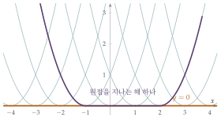

STEP III 1994, 문제 4
계속 읽기 전에 문제를 먼저 읽어 보자. 문제는 STEP Support Programme의 문제 데이터베이스에 있다: step.maths.org/questions/94-s3-q4
도입
미분방정식(differential equation)은 어떤 양이 어떻게 변하는지를 알려 주는 규칙이다. 뉴턴(Newton)의 법칙은 행성이 지금 어디에 있는지가 주어지면 그 행성이 어떻게 움직여야 하는지를 알려 준다. 고전 물리학의 세계관에 따르면 이것으로 충분하다. 지금 세계의 상태를 알면 법칙이 그 미래 전체를 결정한다. 피에르시몽 라플라스(Pierre-Simon Laplace)는 모든 위치와 속도를 아는 지성이라면 모든 것을 예측할 수 있으리라고 상상했다. 이 세계관은 하나의 수학적 가정에 기대고 있다. 미분방정식에 초기 조건이 주어지면 해가 정확히 하나 존재한다는 가정이다.
이 문제는 그 가정이 깨질 수 있음을 보여 준다. 겉보기에 순진한 방정식 \((y')^2 = 4y\)에는 \(x\)축을 따라 달리다가 스스로 고른 순간에 축에서 떨어져 나가는 해들이 있다. 어떤 점들을 지나는 해는 무한히 많다. 현재를 안다고 해서 미래가 결정되지는 않는다. 유일성(uniqueness)이 정확히 언제 성립하는지 밝히는 것은 대학 미분방정식 강의에서 맨 처음 배우는 정리 가운데 하나이다.
시작하기 전에
양변에 제곱근을 취하면 \(y' = \pm2\sqrt{y}\)이다. \(y = (x - c)^2\)을 대입해 보자. 이것이 방정식을 만족하는가? 이보다 더 간단한 해가 있는가?
\(y = (x - c)^2\)이면 \(y' = 2(x - c)\)이고 \((y')^2 = 4(x - c)^2 = 4y\)이다. 따라서 모든 포물선 \(y = (x - c)^2\)은 모든 \(x\)에 대하여 해이다. 그리고 \(y = 0\)도 해이다. \((0)^2 = 4 \times 0\)이기 때문이다. 이 마지막 해를 기억해 두자. 이것이 문제 전체의 열쇠이다.
차근차근 풀기
단계 1 한 점을 지나는 해
포물선 \(y = (x - c)^2\) 가운데 \((a, b^2)\)을 지나는 것은 무엇인가?
\((a - c)^2 = b^2\)이어야 하므로 \(a - c = \pm b\), 즉 \(c = a - b\) 또는 \(c = a + b\)이다. \(b \neq 0\)이므로 이 둘은 서로 다르고, 다음 두 해를 얻는다. \[y = (x - a + b)^2 \qquad\text{그리고}\qquad y = (x - a - b)^2. \qed\] (빠뜨린 해가 없는지도 확인해야 한다. \(y > 0\)인 영역에서는 부호가 고정된 채로 \(y' = \pm2\sqrt{y}\)이고, \(\frac{\mathrm{d}}{\mathrm{d}x}\sqrt y = \frac{y'}{2\sqrt y} = \pm1\)이므로 \(\sqrt y = \pm(x - c)\)가 되어 위의 포물선들을 얻는다. 따라서 주어진 점 근처에서, 그리고 \(y\)가 양수로 남아 있는 동안에는 이 두 해가 유일한 해이다. 그러나 해가 일단 \(x\)축에 닿으면, 3단계에서 보겠지만 영 해(zero solution)와 이어 붙일 수 있고, 그렇게 하면 모든 \(x\)에서 정의된 해가 무한히 더 생긴다. 문제에서 말하는 “두 해”는 두 포물선이다.)
단계 2 두 점과 공통인 해
원점을 지나는 해는 \(y = x^2\)(\(c = 0\)인 포물선)이어야 한다. 이 해는 \(x = 1\)과 \(x = -1\)에서 높이 \(1\)을 지난다. 따라서 \((a_1, 1) = (1, 1)\), \((a_2, 1) = (-1, 1)\)로 잡는다.
\((1, 1)\)을 지나는 해(\(a = 1\), \(b = \pm1\))는 \(y = x^2\)과 \(y = (x - 2)^2\)이다. \((-1, 1)\)을 지나는 해는 \(y = (x + 2)^2\)과 \(y = x^2\)이다. 원점을 지나는 해는 두 경우 모두 같은 곡선 \(y = x^2\)이다.■
단계 3 해의 족 전체와 공통접선
여러 \(c\)에 대하여 포물선 \(y = (x - c)^2\)을 몇 개 그려 보자. 이 모두에 접하는 직선은 무엇인가? 그 직선 자체도 해인가?
모든 포물선 \(y = (x - c)^2\)은 꼭짓점 \((c, 0)\)에서 \(x\)축에 접하므로, \(x\)축은 이 족 전체의 공통접선(common tangent), 즉 포락선(envelope)이다(그림 8.1.1). 그리고 \(x\)축 \(y = 0\)은 그 자체로 미분방정식의 해이다. 이것은 포물선들 가운데 하나가 아니라 별개의 특이해(singular solution)이다.
단계 4 이것이 중요한 이유
원점에서 출발해 보자. 원점을 지나는 해는 무엇인가? 한동안 \(x\)축을 따라가다가 축을 떠나는 해를 만들 수 있는가?
원점을 지나는 해로는 \(y = x^2\)과 \(y = 0\)이 있다. 하지만 사실은 훨씬 더 많다. 각 포물선은 \(x\)축과 접하며 만나므로(만나는 점에서 둘 다 기울기가 \(0\)이다), 조각들을 매끄럽게 이어 붙일 수 있다. 임의의 \(c_1 \leq 0 \leq c_2\)에 대하여 \[y = \begin{cases} (x - c_1)^2 & x < c_1, \\ 0 & c_1 \leq x \leq c_2, \\ (x - c_2)^2 & x > c_2 \end{cases}\] 은 모든 곳에서 \((y')^2 = 4y\)를 만족하는 미분가능한(differentiable) 함수이고, 원점을 지난다. \(x\)축 위의 모든 점을 지나는 해는 무한히 많다. 해는 원하는 만큼 \(y = 0\)에 머물다가 떠날 수 있다. 유일성이 무너지는 곳이 바로 공통접선이다.■

돌아보기
간단한 해부터 찾아라. \(y = (x - c)^2\)과 \(y = 0\)을 시도해 본 것만으로 전체 그림이 드러났다.
포락선은 특이해를 준다. 해의 족에 대한 공통접선은 그 족에 속하지 않는 해가 될 수 있다.
이어 붙이기. 두 해가 접하며 만나는 곳에서는 둘을 이어 새로운 미분가능한 해를 만들 수 있다. 비유일성은 이렇게 퍼져 나간다.
숨은 수학
피카르-린델뢰프 정리(Picard–Lindelöf theorem)(1890–1894년 무렵 에밀 피카르(Émile Picard)와 에른스트 린델뢰프(Ernst Lindelöf)가 증명했다)에 따르면, \(F\)가 \(y\)에 대하여 립시츠(Lipschitz)이면, 즉 \(|F(x, y_1) - F(x, y_2)| \leq L|y_1 - y_2|\)를 만족하는 상수 \(L\)이 있으면, \(y(x_0) = y_0\)인 방정식 \(y' = F(x, y)\)는 \(x_0\) 근처에서 해를 정확히 하나 가진다. 대략 말하면, \(y\)가 변할 때 \(F\)가 무한히 빠르게 변해서는 안 된다는 뜻이다. 우리 방정식은 \(y' = \pm2\sqrt y\)이고, \(\sqrt y\)는 \(y = 0\)에서 기울기가 무한대이다. 그곳에서 립시츠가 아니며, 바로 그곳에서 유일성이 깨진다. (주세페 페아노(Giuseppe Peano)는 1886년에 \(F\)가 연속이기만 하면 해가 존재함은 보장되지만 유일함은 보장되지 않는다는 것을 보였다.) 피카르-린델뢰프 정리의 증명에는 2.2 절의 축약 사상 원리(contraction mapping principle)에 의해 수렴하는 반복법이 쓰인다.
새는 양동이
물리적인 예를 하나 보자. 바닥에 구멍이 난 양동이는 토리첼리(Torricelli)의 법칙에 따라 비워진다. 물의 높이 \(h\)는 \(h' = -k\sqrt h\)를 만족한다. 시간을 앞으로 흘려보내면 아무 문제가 없다. 양동이는 비워지고, 빈 채로 남는다. 그러나 시간을 거꾸로 돌려 보자. 빈 양동이를 발견했을 때, 방정식은 그것이 언제 비워졌는지 알려 주지 못한다. 모든 시간에 \(h = 0\)인 해도, 어느 순간까지 가득 차 있다가 빠져나간 해들도 모두 “지금 비어 있음”과 모순되지 않는다. 비유일성은 과거에 관한 정보가 사라졌다는 사실이 수학에 드리운 그림자이다.
노턴의 돔
2003년에 철학자 John Norton은 마찰이 없는 돔을 하나 묘사했다. 그 모양이 특별해서, 꼭대기에 정확히 놓인 공은 \(r'' = \sqrt r\) 꼴의 뉴턴 법칙을 따른다. 한 가지 해는 공이 꼭대기에 영원히 머무르는 것이다. 그러나 다른 해들도 있다. 공이 아무 시간 동안 그곳에 머물다가 아무 원인 없이 저절로 아무 방향으로나 굴러 내려가는 해들이다. 이 예는 지금도 논쟁거리이다. 고전역학은 결국 결정론적(deterministic)인가? 수학적으로 보면 이것은 바로 이 문제에서 본 것과 같은 종류의 비유일성이다.
사고 기술
해를 하나 찾았다고 그것이 유일한 해임이 보여진 것은 아니다. 다른 해가 있는지 물어라. 특히 방정식에 매끄럽지 않은 함수가 들어 있을 때 그렇다.
대학에서는 존재성과 유일성 정리가 어떤 조건이 필요한지 정확히 알려 준다. 여기서는 영에서 기울기가 무한대인 제곱근 하나만으로도 유일성이 깨졌다.
더 도전하기
두 가지 증가율. STEP II 2018, 문제 8을 풀어 보자. 이 문제는 치환을 이용해 두 성장 방정식을 푼다. 그런 다음 왜 \(y = 0\)도 같은 초깃값을 갖는 해인지, 그리고 이것이 유일성에 관해 무엇을 말해 주는지 생각해 보자.
새는 양동이. \(h(0) = h_0 > 0\)일 때 \(h' = -k\sqrt h\)를 풀어라. 양동이는 언제 비는가? 어떤 \(T\)에 대하여 \(h(T) = 0\)이고 모든 \(t \geq T\)에 대하여 \(h(t) = 0\)인 서로 다른 두 해를 써라.
되찾은 유일성. \(y(0) = 0\)인 \(y' = 2y\)의 해는 \(y = 0\)뿐임을 보여라. (힌트: \(\frac{\mathrm{d}}{\mathrm{d}x}(ye^{-2x})\)를 생각해 보아라.) \(2\sqrt y\)에는 없고 \(2y\)에는 있는 성질은 무엇인가?
세제곱. 원점을 지나는 \(y' = 3y^{2/3}\)의 해를 모두 구하여라.
더 읽을거리
Morris Hirsch, Stephen Smale & Robert Devaney, Differential Equations, Dynamical Systems, and an Introduction to Chaos (Academic Press). 존재성과 유일성, 그리고 이 장의 나머지 내용 대부분을 다룬다.
George Simmons, Differential Equations with Applications and Historical Notes (CRC Press). 역사 이야기가 가득한 고전이다. 특이해와 포락선을 다룬다.
John Norton, “The dome: an unexpectedly simple failure of determinism”, Philosophy of Science 75 (2008). 짧고 읽기 쉽다.